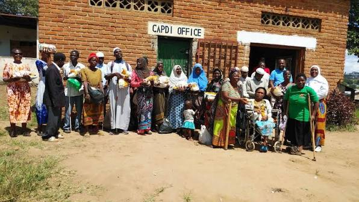
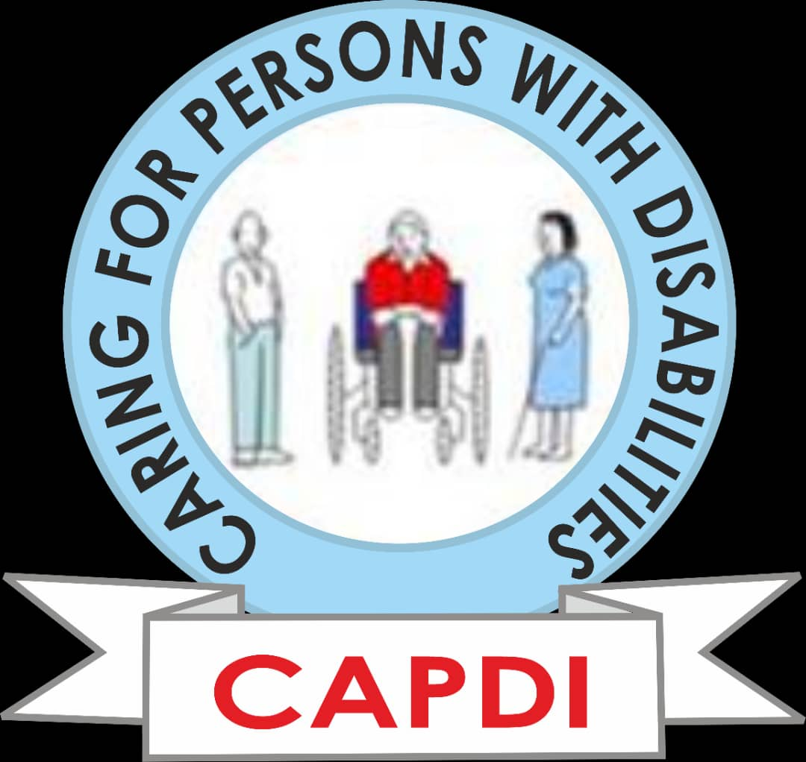

Our Programmes
Programs, training and advocacy that empower people with disabilities and their communities. Click a programme to read the full details.

Empowering Women & Girls with Disabilities — Nsanje 2025-26
With support from the Women & Girls Fund/FAWEMA, CAPDI is training and mentoring women and girls with disabilities to claim their rights, influence local decisions, and hold service-providers accountable. The programme pairs inclusive policy campaigns with community awareness, male-ally engagement, and evidence-based advocacy to make health, education, protection, and leadership spaces safe and accessible for all.

Digital Literacy for Rural Youth
Empowering young people in rural communities with essential digital skills for the 21st century. This initiative provides comprehensive computer training, internet literacy, and technology access to bridge the digital divide and create economic opportunities.
Read more
Flower Vase Making
Artisan Skills for Women This initiative trains women in the production of flower vases, promoting entrepreneurship and sustainable income generation.
Teach women vase-making skills. Enable micro-business creation. Support local economic empowerment.
Read moreSoap Making Training
Community Hygiene & Safety Supported by the U.S. Embassy and CDC guidance, this project trained communities in soap and mask production, improving hygiene and COVID-19 preparedness for 9,000 marginalized individuals. Key Objectives Train communities in soap and mask production. Improve hygiene practices. Reduce COVID-19 transmission risk.
Read more